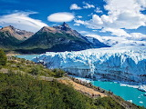

Универсальное свойство, одновременно устанавливающее цвет, стиль и толщину внешней границы на всех четырех сторонах элемента. В отличие от линии, задаваемой через border, свойство outline не влияет на положение блока и его ширину. Также нельзя задать параметры линии на отдельных сторонах элемента, outline применяется сразу ко всем четырём сторонам.
Синтаксис
outline: outline-color || outline-style || outline-width | inherit
Значения
- outline-color
- Задает цвет линии в любом допустимом для CSS формате.
- outline-style
- Стиль линии.
- outline-width
- Толщина границы.
- inherit
- Наследует значение родителя.
Пример
